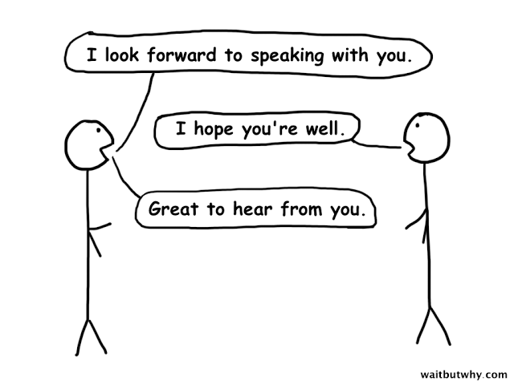
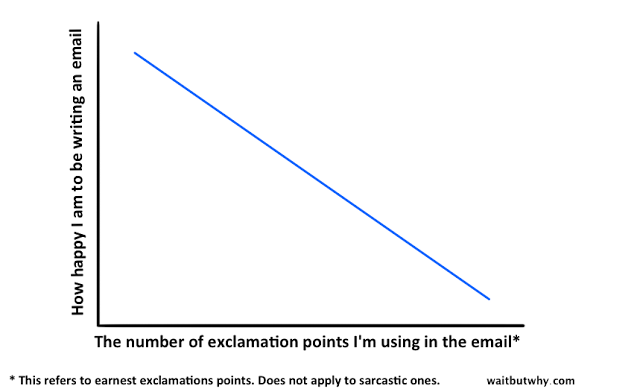

电子邮件作为我们生活的一部分伴随着互联网的发展已经存在了很多年了，我们或许会听说有人因为这样或那样的原因关闭自己的微博的，或者也听说过有人为了回归所谓淳朴的生活而不使用智能手机的，但是，在这个成熟的互联网世界，很少听说有人完全不使用电子邮箱的。
没有电子邮箱就像没有电话号码似的，尤其是仍然有很多网站的注册需要使用电子邮箱地址。于是乎，通过电子邮件与人沟通，开着电邮窗口敲击键盘和客户联系，每天打开电脑第一时间是清理电子邮箱的收件箱也几乎成了我们的固定节奏。 尤其是如果你是在外企工作，那么通过英文邮件沟通工作内容几乎会占你日常工作的大部分时间。
那么在我们平时使用英文邮件进行交流的时候需要注意一些什么呢？今天就从以下10个方面来帮大家梳理梳理。
「原文是wbw的一篇总结email沟通尴尬场景的文章，我把当中的干货翻译并总结出来分享给大家，所以使用的是原文的插画」
1）态度要认真，避免草率地发送邮件
将心比心，要是你的邮件中经常出现以下几点：
总是出现拼写错误
不使用标点符号
不区分大小写
用极其简短的邮件回复他人认真而诚恳的长邮件
那么几乎可以肯定对方会感觉你很草率，你是在敷衍他，或者你根本不在乎他。那么这就是一种消极的沟通方式，很难或者根本无法达到想要的目的。这种情况经常发生在上级对下级，客户对供应商，或者一个人需要回复很多人的时候。
因此我们要做的就是时刻保持认真的态度，让每一个和你沟通的人都感受到你对他们的重视。在发送邮件之前养成校对的习惯是很有帮助的。
2）第一印象很重要
在邮箱的选择上，工作的沟通和交流最好杜绝使用个人邮箱，尤其是QQ邮箱，对方或许会直接当垃圾邮件过滤掉了。
能不使用附件就尽量不使用，网络上共享的内容可以大方地把网址直接发送给对方，过长的网址请做成超链接，注明网址所引用的内容是什么，以免对方认为是恶意网站。当然如果你很清楚对方所处的网络环境是只能收发邮件不能访问外网的话，那么把内容以附件的形式发送也不失为一种选择。
一群人沟通的时候，请注意保持队形，记得也回复所有人，就算你故意想和某人说一些悄悄话，最好也另起一封标题不同的邮件，以免对方不小心群发给了所有人。
另外千万不要在邮件里全部使用大写字母，会吓到对方的。
3）选对问候语会是一个好的开始
为了更清楚的表述这一点，我们把问候语对应的亲疏关系分成以下几种：
大家有没有从图上看出点眉目？
使用「Hi」作为开场问候语的话，一般说明你们的关系并不是很熟，甚至比较陌生。当关系相对更进一步的话，一般我们会选择使用「Hey」。如果很亲近的人打招呼我们一般会省去所有的客到，比如我们一般直接喊「老妈」，而不会说「你好，老妈」。
对于那些中间区域的人， 也就是既不是很熟悉，但是又有一些交情的人，我们就会比较纠结使用怎么样的开场问候比较好一点。用「Hi」或者「Hey」都略显正式，但是不加任何问候又感觉有一点唐突，好比需要要写一封邮件给两年多没有联系的大学同学或者上一家公司的老同事，开头的问候语就很难把握。
下面是几种比较讨巧的方法，可以借鉴借鉴：
－ Hey John！－在后面增加了一个感叹号，就和单纯的「Hey」在语气上有所区别了，让人感觉到一种积极的态度，或许还能联想到你在写这封邮件的时候表情是微笑着的。
－ Johnny！－这里使用了对方的昵称，显的更加的亲切，感叹号结尾的效果和上面类似。
－ Hey man －这是一种在邮件开头使用的让人感觉像哥儿们似的问候方式，想象一下你们的关系就像在球场上的队友那样，互相击掌问候。
－ Sammmm －一种拖长尾音的问候方式，很适合女生用来卖萌。
－ Heyyy － 拖长的这些Y给人一种笨笨的含含糊糊的要开始说些事情的感觉，有一种朋友之间的默契感和节奏感。
4）合适地使用结尾祝福语
同样的，我们的邮件一般也有一些固定的祝福语，比如Best Regards, Talk soon，Take care，Thanks等等，当然关系特别熟的也不需要任何的客到，关系比较陌生的也比较容易选择，尽量正式一点总没错，最纠结的仍然是那些略带交情的人群。
一般来说我都会选择用Thanks来结尾，但是有时候回头看看又觉得太正式了一点，于是，我采取地方法是在后面再多添加两个S，Thanksss，这样看起来语气会亲切一点。
我还注意到有些人并不会使用以上说到的任何一个祝福语来作为邮件的结尾，而是会有一些自己特有的符号，像是按个手掌印，或者是就写自己名字的首字母。这种方式在我看来都挺可爱的，可以想象发这样邮件的人当时是类似下面这样萌萌哒的样子。
5）千万别让人感觉像是在和机器人交流
机器人会的那些对话往往都是人人都知道的烂大街的用语，程序写死问什么答什么就可以了。

随着科技的进步，我们在和手机里的人工智能程序（比如Siri）对话的时候，都能够略微的感受到Siri的一些个性，那么在邮件里如果还是那种「How are your」,「Fine, thank you, and you?」这样的死板套路的话，必定是吃不开的。
我们平时总是习惯于在邮件交流中使用一些很普遍很大众的回答，而缺少了自己的个性，而平时和身边朋友的交流其实每个人都是有自己的特点的，所以在邮件中也可以在一些细节的地方流露出自己的个性，这样子收到邮件的人感觉也会好一点。
6）巧妙准确的体现自己的语气
在日常与人交流的过程中，我们有n种方法可以表现我们的语气，即便只是通过电话交流没有面部表情，我们也可以清楚的知道对方的语气，从而准确的理解对方话里的意思。
但是通过电子邮件交流起来，要想准确的获取到语句中由于语气不同而产生的细微差别就比较困难了。
比如有些人在邮件里从来不使用感叹号，这对你来说也是比较容易交流的一种类型，只要平铺直叙，句号结尾就没啥大问题。
而有一部分人特别喜欢使用感叹号，那么和这些人交流的时候，如果你不使用感叹号，就会让对方感觉你不够热情似的，所以应对这样的人，最好的方法就是你也使用感叹号。
例如在下面这幅图中，对方是「Thanks！」而你只是「Thanks」的话，对方心里或许就会多想哦。
当然，有些时候会把问号不小心写成感叹号，对于这种情况就请自行纠正吧。
我一般写邮件的时候对感叹号的使用都是比较慎重的，最好的方式就是根据对方的风格来调整。但是可以明显的感觉到，邮件中感叹号使用的多少，和写邮件时候心情的愉悦程度是有关系的：

最后介绍一个强大的体现语气的符号「省略号」，这会让语气更带神秘感，可以拉近和对方的距离，收到邮件的人也会有更多的想象空间：
7）避免陷入枯燥的毫无疑义的长篇邮件交流
这是一种从传统书信交流遗留下来的现象，经常发生在所谓的笔友之间。总是会隔几个月就有一次邮件交流，聊聊各自最近的生活，回答一下对方在上一封邮件中提出的问题啥的。这样的邮件往往会是长篇大论，阅读起来也会比较无聊和枯燥。但是由于已经算是一种习惯或是默契了，没有一方愿意主动停止，或许会一直延续到某方去世，或者有一方主动不再回复了，这时候双方或许都可以松一口气。
工作邮件，为了高效和准确的沟通，我们则会不自觉的避免出现长邮件的情况。万一有一些问题邮件来来回回沟通了n多次都没有结论的话，不如面对面碰个头，或者开个电话会议进行直接的沟通，之后根据会议纪要另起邮件来跟踪行动清单里各自的待办事项。
8）电子邮件也能展示你真诚的笑容
在面对面的交流中，多笑一笑绝对不是坏事，对有趣的事情毫无保留的开怀大笑也好，对别人取得成绩时发自内心的微笑也好，遇到尴尬瞬间自嘲似的傻笑也好，都可以说是有利于沟通的积极的方式。那么在邮件中怎么笑呢？
除了lol这种无趣的方式外，我们可以简单和平常一点：
haha－很朴实很普通，但是很实用的方式。
hahaha－遇到更有趣的事时，可以多一个ha
hahahaha－笑翻了。
大写的HAHAHAHA－笑死了～
所以，当真的很好笑的时候，不要吝啬大写的HAHAHAHA。
9）不要太把自己当回事
你知道有些人会使用BCC功能吧邮件同时秘密地发送给其他人吗？所以你永远无法知道，你自以为是两个人之间的电子邮件沟通，其实很可能是有第三者，第四者，第n者都知道其中的内容，当你知道真相后会生气吗？
当你在很多邮件中都被抄送到的时候，你或许会沾沾自喜，觉的自己挺重要的，别人之间的沟通感觉都要知会你，然而你有没有想过，还有更多的邮件是在你的家人、朋友和同事之间传播的，并没有抄送你，因为和你根本不相干。
还有跟尴尬的情况，比如你发了个荤段子或者一些别人的八卦隐私给你的亲密好友，而你的好友在把这个笑话转发给其他人的时候带着你的邮件发送记录，这样所有的人都知道你是事情的源头，会不会感到难为情呢？
10）别让粗心大意毁了你
想想下面的例子吧：
－X想给Y发邮件说Z的坏话，结果把邮件直接发给了Z。
－想在群发的邮件里单独回某人点悄悄话，结果不小心点了「回复所有人」
－把邮件转发给某些人的时候，忘记清除邮件的历史记录，里面很有可能有一些敏感信息是不能转发的。
－把错误的带有机密或敏感内容的附件发送给不相干的人。
要是在你身上发生类似的事情，是不是想死的心都有？所以千万不能粗心大意，养成double check的好习惯真的很有必要！